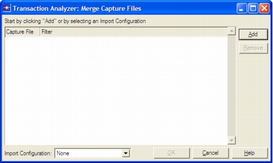

“Merge Capture Files” Options: Packet Traces and Packet Filters This window defines the packet trace and packet filters that define the raw traffic data for the Transaction Analyzer model. Note the following: • If you select multiple packet traces and packets between the files cannot be matched, then you must perform a Manual Merge operation. For more information, see Manual Merge (Synchronizing Packet Traces Manually). • If one or more packet traces with SSL-encrypted HTTPS connections are selected, you will need to specify the local directory of the private key required to decrypt the transaction. For more information, see Capturing HTTPS Transactions for Automatic SSL Decryption. • If you are importing IP-layer-encrypted traffic, do not use the Default filter because it will filter out that traffic. The “IP” filter is usually a safe choice for packet traces that contain IP-layer-encrypted traffic. Figure 8-4 Merge Capture Files Dialog Box  Table 8-2 Choose Capture Files Dialog Box Item Description Capture File Creates a file list using the Add and Remove buttons on the right. To change or replace a file in the list, click on the file name in the Capture File column. Filter Specifies a capture file filter to exclude extraneous frames. • To configure a filter, click in the Filter column to the right of the trace file name. Choose a predefined filter from the pull-down menu, or choose Edit… to define a filter. • To edit a filter, select the filter and choose Edit… from the pull-down menu.For more information, see Packet Filtering. Note—If you are importing IP-layer-encrypted traffic, do not use the Default filter because it will filter out that traffic. The “IP” filter is usually a safe choice for capture files that contain IP-layer-encrypted traffic. Import Configuration Saves the settings for reuse in the future.